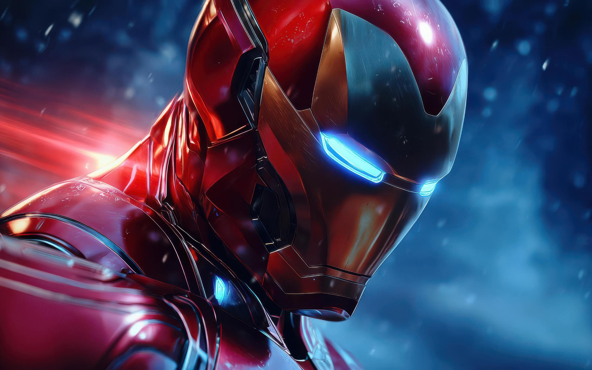
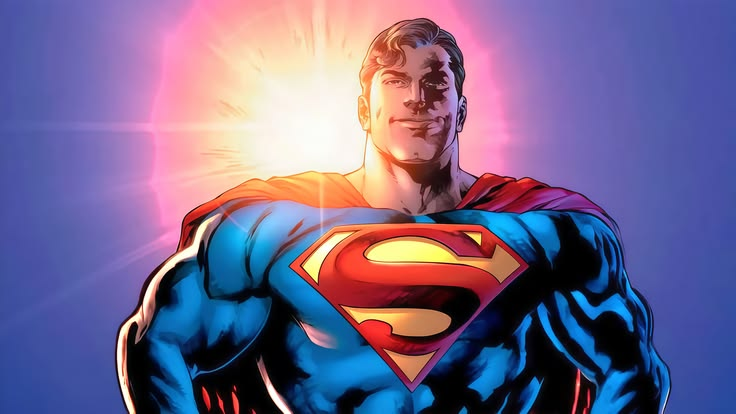
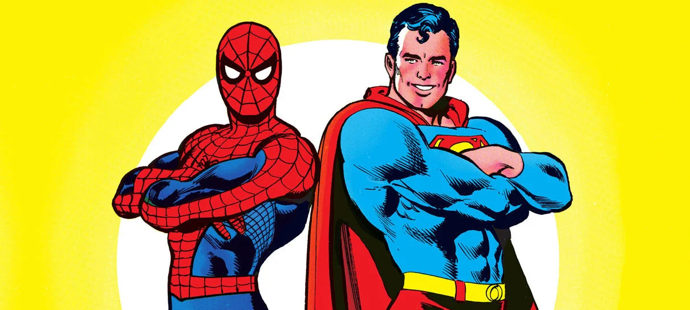
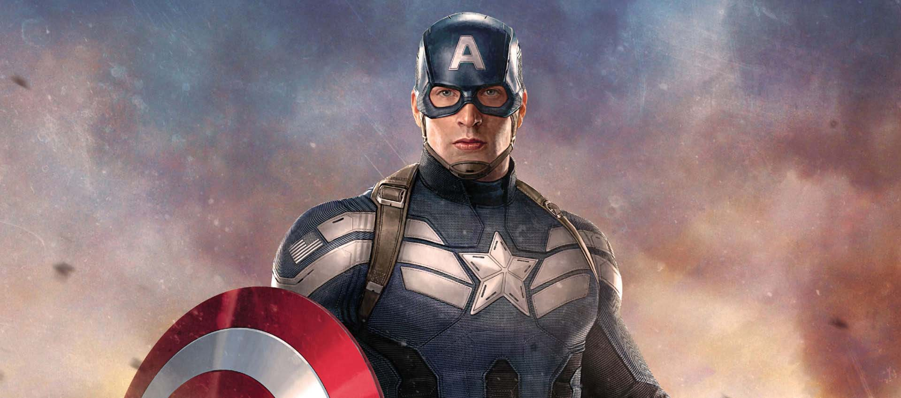
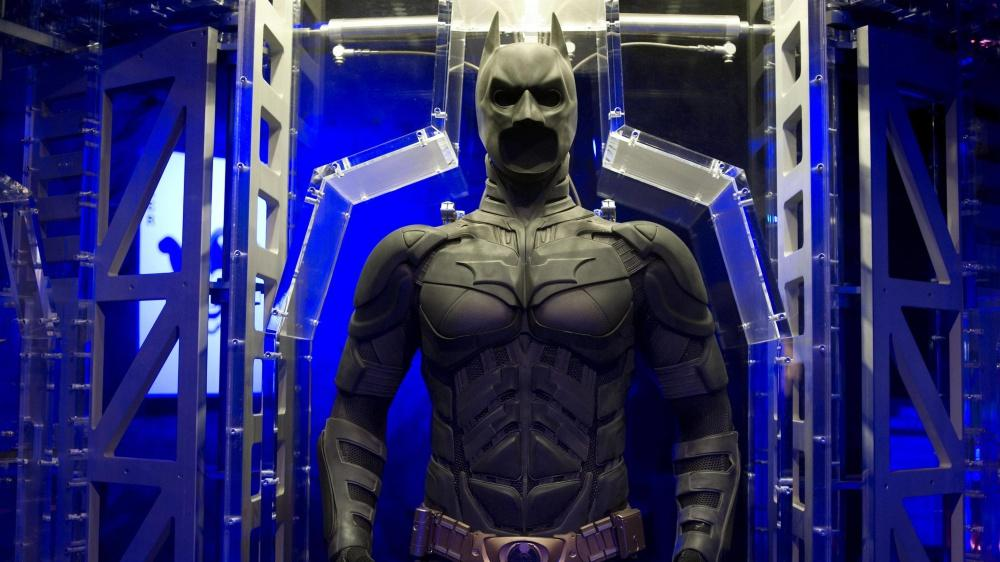
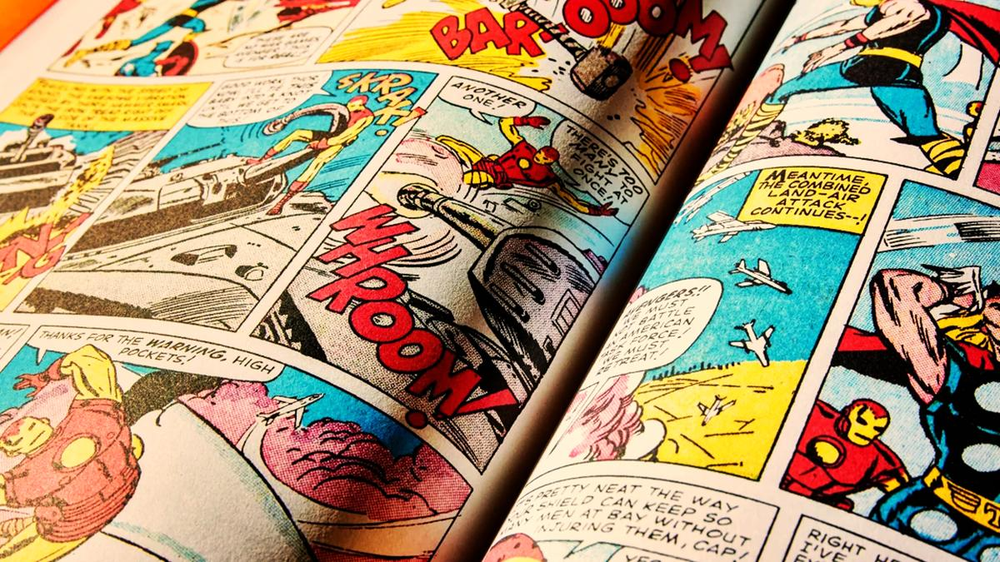
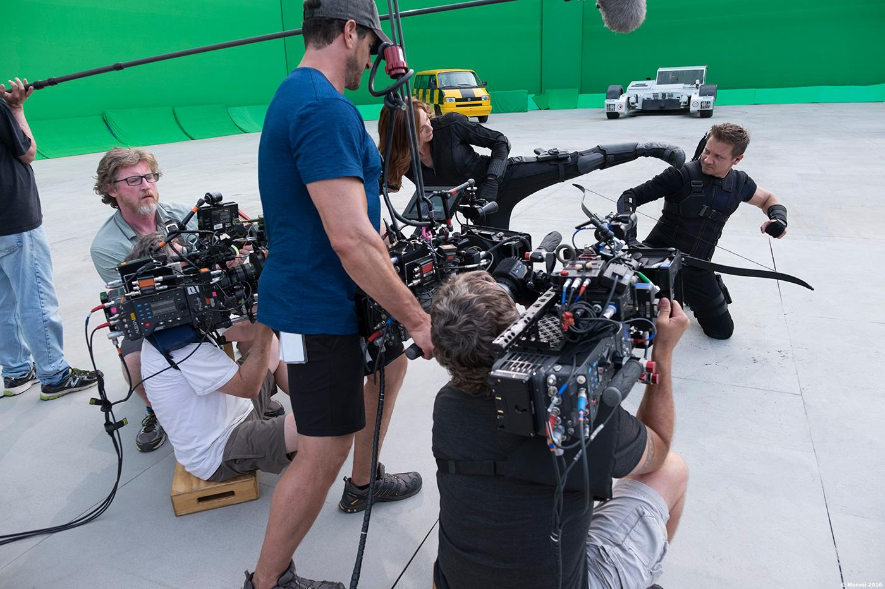
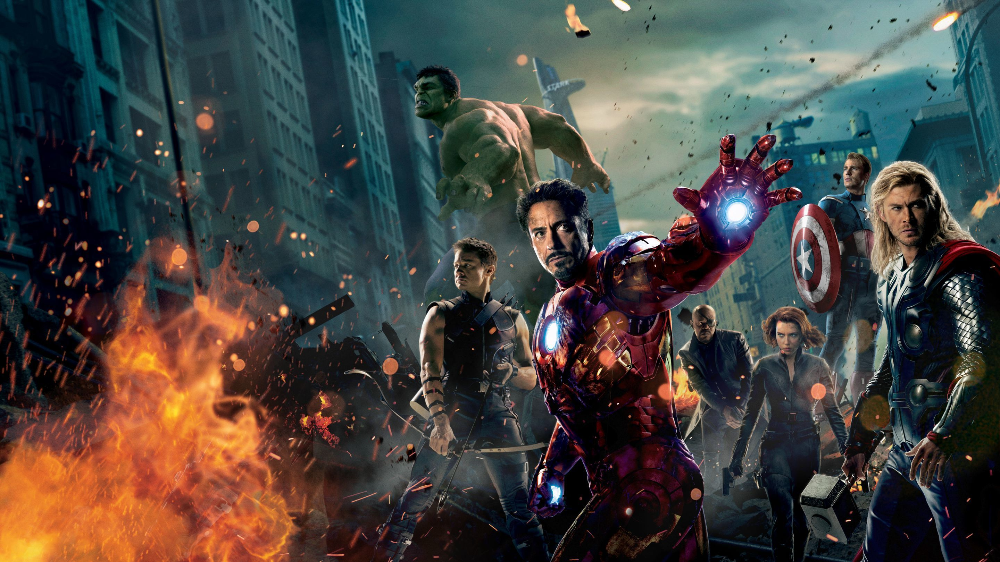

CINEMA
O legado dos heróis tecnológicos
Como a tecnologia se tornou parte fundamental da evolução dos super-heróis.

Como a tecnologia se tornou parte fundamental da evolução dos super-heróis.

O papel dos grandes símbolos na construção de histórias heroicas.

Personagens e ideias que ajudaram a transformar os quadrinhos.

Escolhas, sacrifícios e o que realmente constrói um personagem memorável.

Como personagens clássicos continuam conquistando novas gerações.

O caminho que transforma uma história em quadrinhos em uma produção audiovisual.

Técnicas que transformam cenários e personagens em experiências cinematográficas.

Por que equipes são tão importantes para algumas histórias marcantes?

Uma explicação simples sobre realidades alternativas e versões de personagens.
Nenhuma notícia encontrada para essa pesquisa.
Matéria editorial demonstrativa, produzida para o projeto acadêmico HeroVerse. As datas de publicação são fictícias.
Voltar às notícias